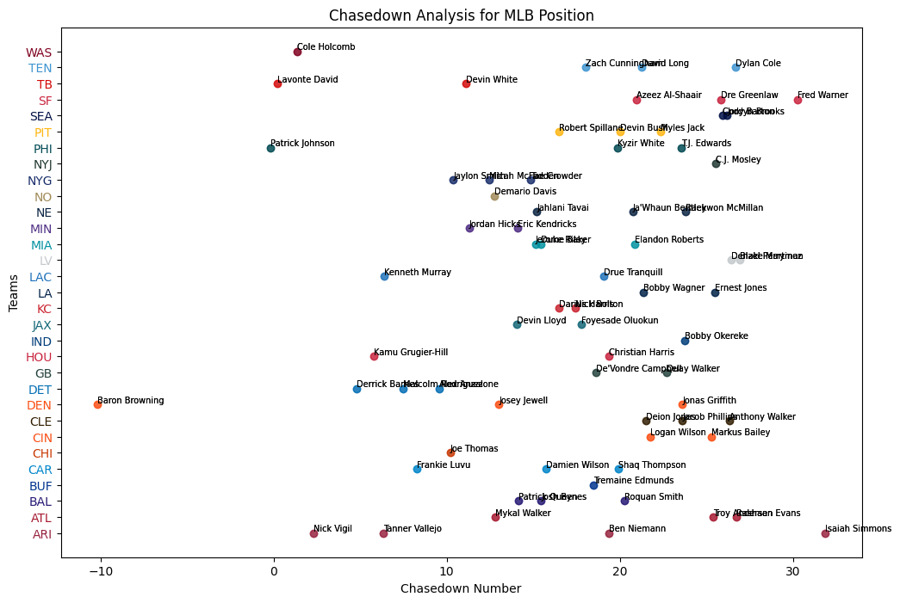
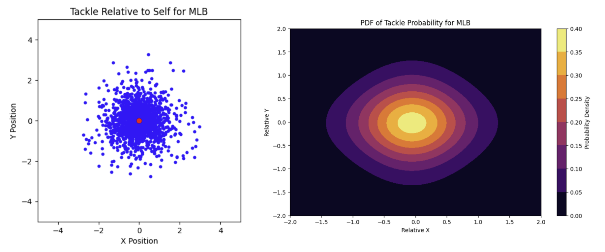
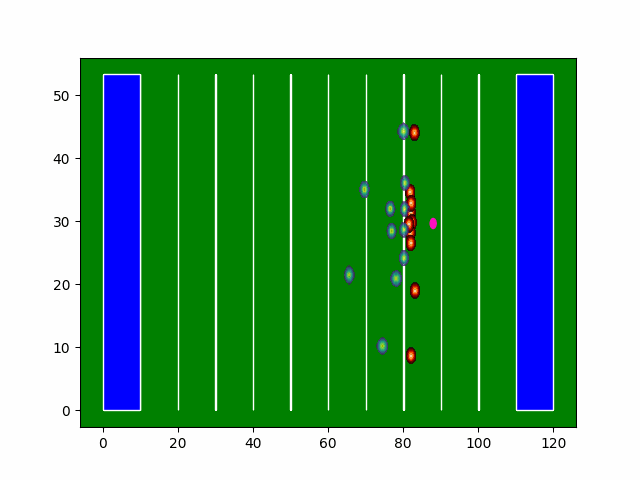

NFL Big Data Bowl
Two metrics for tackling — one for the chase, one for the finish.
Tackling is half of football and almost nothing about it shows up in a box score. A tackle depends on reading the play, shedding a block, closing the gap, and staying upright on the turf, and the stat sheet records exactly one bit of that: whether the tackle happened. For the 2024 NFL Big Data Bowl, Akil Daresalamwala, Rudra Raval and I tried to recover the rest of it from tracking data — modeling good tackling directly from where players actually were, frame by frame, rather than from the outcome alone.
A tackle is a two-stage process, so we built two metrics. SPEED (Strategic Pursuit Evaluation for Effective Defense) scores how well a defender closed on the ball carrier. WATT (Weighted Average Tackle Total) scores whether they finished once they got there. Plotting one against the other gives the VORTEX plot.
Scoping the data
This was a proof of concept, so we narrowed hard: run plays only, and only plays where a tackle was actually made. Within a play, only the frames from handoff to tackle count — otherwise corners and safeties get punished for doing their real job, which early in the play is running away from the ball to cover a man or a zone.
Sacks, fumbles, and plays ending out of bounds are out of scope for both metrics.
Who counts as a potential tackler
Penalizing a defender lined up across the field for not chasing a run is noise, not signal. So before scoring anyone, we cut the player pool per play.
We measured the distance from ball carrier to actual tackler at the moment of handoff, across every run play, and applied the 1.5×IQR rule to that distribution:
| Distance (yards) | |
|---|---|
| Quartile 1 | 5.60 |
| Quartile 3 | 9.65 |
| Potential tackler threshold | 15.73 |
Anyone beyond 15.73 yards at handoff is dropped from consideration for that play. This does discard a few genuinely great long chases, but it saves a much larger slice of the player population from meaningless SPEED scores.
SPEED — the chase
SPEED measures how well a defender tracks and closes on the ball carrier, and it is deliberately blind to the outcome. The point is that the leadup matters independently of the finish: scoring pursuit on its own surfaces players with real hustle who aren't household names.
The metric integrates the curve of defender-to-ball-carrier distance over the play. Sections with negative slope — the gap closing — integrate as positive. Sections with positive slope integrate as negative, because a defender letting the gap grow is not doing his job.
Each section is then weighted by distance covered divided by time taken, so closing five yards in half a second scores better than closing five yards over two seconds.

SPEED turns out to correlate strongly with position, which makes it a within-position comparison tool rather than a global one. Secondary players post the highest values, then linebackers, then defensive linemen.
WATT — the finish
Once a defender is in position, how reliably do they bring the carrier down?
We started by assuming the ball carrier's position relative to the tackler at the moment of tackle would follow a skewed normal. It doesn't. A Kolmogorov–Smirnov test against the tackle data rejected skewnorm and strongly favored the t-distribution — for middle linebackers:
| Axis | P-val skewnorm | P-val t |
|---|---|---|
| x | 0.0148 | 0.7395 |
| y | 0.0258 | 0.9704 |
So WATT models each defender's tackle probability as a bivariate t-distribution, fit separately per position.

That distribution is regenerated every frame and scaled down by offensive presence — blockers occupying the same area reduce the defender's share of control over it, and therefore their probability of making the tackle. When the overlap between a defender's distribution and the ball carrier exceeds 50%, that defender is in play. At the end, they're scored on whether they made the tackle, missed it, or neither, weighted by their average probability of making it — so an easy tackle missed costs more than a hard one.

The animation is a 12-yard Ezekiel Elliott run against Detroit. Each nearby defender's PDF grows or fades as they gain or lose ground on him and as blockers get in front. By the end all of them have depleted — nobody tackled him — which makes it a very low-scoring WATT play for that defense.
VORTEX
SPEED on the x-axis, WATT on the y-axis. Pursuit and execution are different skills and the two-axis view keeps them separate instead of collapsing them into one number.
Positions cluster in distinct regions. Cornerbacks land high on SPEED with widely varying WATT — quick to arrive, inconsistent at finishing. Outside linebackers sit balanced across both, matching their split role against run and pass. Defensive tackles score low on SPEED, which is expected given where they start, with WATT spread wide.
Where it landed
The framework does what we wanted: it separates the defender who never gets there from the defender who gets there and whiffs, and those are different problems with different fixes.
The obvious limits are the scoping decisions. Run plays only, tackle-completed plays only, and a hard IQR cut on the player pool — each one buys tractability and costs generality. Extending WATT's offensive-control term to model blocks properly, rather than as a proximity-weighted density subtraction, is the piece with the most room left in it.